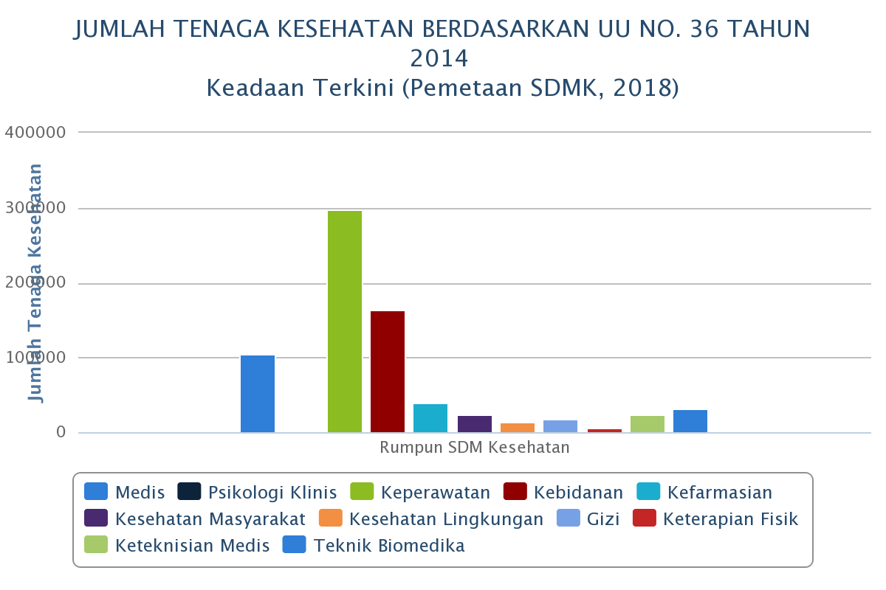

Pembaharuan data per 31 December 2019
| Jumlah Unit | Jumlah SDM Kesehatan | |||||||||||||
| Medis | Psikologi Klinis | Keperawatan | Kebidanan | Kefarmasian | Kesehatan Masyarakat | Kesehatan Lingkungan | Gizi | Keterapian Fisik | Keteknisian Medis | Teknik Biomedika | Tenaga Kesehatan Tradisional | Tenaga Penunjang Kesehatan | Jumlah (Per Provinsi) | |
| 28754 | 107007 | 734 | 376136 | 228278 | 63177 | 28459 | 17038 | 24905 | 7508 | 28303 | 43086 | 327 | 319204 | 1244162 |